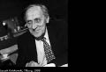

LESZEK KOLAKOWSKI
Jochen Winter'ın uyarladığı versiyondan tercüme edilmiştir.
Leszek Kolakowski (1927 Polonya doğumlu), filozof, felsefe tarihçisi. 1966 yılında, Polonyalı muhalif öğrencilerden yana tavır aldıktan sonra Komünist Parti'den ihraç edilince bütün dünyanın dikkatini üzerine çekti. İki yıl sonra, ders verme hakkı elinden alındı. Bu durum Kolakowski'nin Polonya'dan ayrılmasına yol açtı. Mitler tarihine ve din felsefesine bağlı sorunlar üzerinde sürekli çalışmış olan düşünür 1970'li yıllarda Oxford ve Chicago'da dersler verdi. 1977 yılında, Alman kitapçılık barış ödülünü aldı. En önemli eserleri arasında üç ciltlik Histoire du marxisme (Fayard, 1988) ve Horreur métaphysique (Payot, 1989) sayılabilir. Onun için her zaman önem taşıyan şey, eğer yaşam ve bilinç kelimenin dar anlamında insani kalacaksa, gelecekte insanın da, rasyonel düşünce hareketlerinin ve mitsel bakışlarının ötesinde, mitsel imgeler ve bakışlar rezervuarına sahip olması gerektiğini anlatabilmektir.
Diğer eserleri arasında şunlar yer alır: Petite philosophie de la vie quotidienne (Editions du Rocher, 2001) ve La clef céleste ou Récits édifiants de l'histoire sainte réunis pour l'instruction et l'avertissement (Bayard, 2004).

KOLAKOWSKI
Leszek Kolakowski, Polonya Komünist Partisi'nden ihracınızdan ve Varşova Üniversitesi'ndeki kürsünüzden uzaklaştırılmanızdan sonra, 1968'de esasen Berkeley, Yale, Montréal, Chicago ve Oxford üniversitelerinde ders verdiniz. Anglosakson felsefesinin güçlü ampirist ve pozitivist akımlarıyla karşı karşıya gelmenize yol açan bu Doğu'dan Batı'ya geçişi nasıl yaşadınız?
Bu dönüşüm çok radikal olmadı: Polonya'da benim akademik formasyonum esasen analitik felsefe alanındaydı. Berkeley'de, Yale ve Montréal'de kısa süre kaldıktan sonra, Chicago ile Oxford arasında yıllarca gidip geldim. Chicago'da, felsefe fakültesinden başka, toplumsal bilimlerle ilgili sorunlar üzerine özel bir komisyonda yer aldım. Komisyonun üyeleri arasında yazar Saul Bellow, filozof Alan Bloom ve sosyolog Edward Shils gibi farklı kişiler yer alıyordu. Bu komisyon, kendi türünün tek örneği olan bir kurum olarak, Avrupa entelektüel geleneğini Amerikan düşüncesine katmayı hedefliyordu. Oxford'da özellikle tarihsel temalara ilişkin metinler okudum, ama mümkün olduğunca az; çünkü kendimi öncelikle araştırmaya adamak gibi bir ayrıcalığım vardı. Elbette fellow'dum ama kolejde egemen olan pozitivist ve analitik yönelimleri dert etmem gerekmiyordu.
Charles Peirce, William James, John Dewey ve George Herbert Mead'ın kurduğu Amerikan tarzı pragmatizm köklerini doğa bilimlerinin yönteminden alır; sonuçta bu, her keşfin yararlılığı ölçüsünde, dışsal gerçeklik içindeki "başarısı" ölçüsünde değerlendirilmesine yol açar. Bu türün öncülleri Anglosakson dünyanın bütünü üzerinde önemli bir etkide bulunmuştur, hatta bu etkinin hiç ortadan kalkmadığı bile söylenebilir. Amerika Birleşik Devletleri'nde geçirdiğiniz bütün bu yıllar boyunca bu akımların cazibesine hiç kapılmadınız mı?
Hayır. Pragmatik yaklaşımın rasyonalist eğilimi hedef olarak önüne bilginin aklanmasını koyduğu ölçüde doğrulanır, ama aşırıya vardırıldığında, hakikat fikrini ortadan kaldırır. Bu aşırı baskıyı kabul edemem. Yirminci yüzyılın ilk çeyreğinden itibaren analitik felsefenin bizim düşüncemize önemli bir katkıda bulunduğuna kimse itiraz etmeyecektir, ama tinimizin ihtiyaç duyduğu her şeyi kapsadığını düşünecek gerekçelere sahip değilim. Biliyorsunuz: Bertrand Russel'ın A History of Western Philosophy'de (Batı Felsefesi Tarihi) Husserl'in adı bile anılmaz, sanki hiç varolmamış gibidir. Bana kalırsa, tamamen vardır. Bu düşünce akımında, Alice Harikalar Ülkesinde'de olduğu gibi, "önce hüküm verilir, soruşturma sonra yürütülür" ilkesine göre ifade edilmiş sayısız yargı bulunuyor.
Bir Bentham'ın yararcılığının, bir Auguste Comte'un pozitivizminin ve pragmatizmin açtıkları gedikler üzerinde biraz duralım. Bir hedefe kuşkusuz bağlı olan ama aynı zamanda anlamlı ve mantıksal olan konular içerisinde gerçekliği ifade etmeyi sağlayan muğlaklıktan yoksun ölçütlere iman ile bu gerçekliği aşarken yine bu gerçekliğin koşulunu oluşturan ama saf anlamda matematik analizin dışında kalan değerlere iman arasında bir çelişki var.
Kuşkusuz, ama belirleyici nokta, bizim bu sorunu mantıksal bir bakış açısından mı yoksa antropolojik açıdan mı ele aldığımızı bilmektir. Mantıksal açıdan herhangi bir rasyonellik ilkesi varsayıldığı sürece çelişki yoktur; bununla birlikte bunu sorgusuz sualsiz kabul etmeyeceğim. Antropoloji açısından olay tamamen başka bir biçimde kendini gösterir. Bu bakış açısından, iki konum arasında açıkça bir uçurum vardır. Bana göre bu, bizim değerler hiyerarşimizin derin bir dönüşüm geçirmiş olmasına bağlıdır. Metafizik düşünme ile dinsel kanaat, bizim önemli kabul ettiğimiz bu iyiliklerin hiçbirini bize sağlamaz; arabaların yürüdüğünü, televizyonların işlediğini ve besin üretiminde randımanın arttığını görmemizi sağlayan şey yalnızca doğa bilimleri ve teknolojik gelişmedir. Dolayısıyla, değerlerimiz yalnızca bilim sayesinde üretilebilecek şeylere bir anlam atfettiğimiz noktada dönüşebiliyorsa, metafiziğe ve imana yer kalmaz, daha doğrusu bunlar yararsız, gereksiz görülür. Yoklukları tuhaf bir kültürel rahatsızlığa neden olur ve bu da gerçek anlamda tedavi edilemez çünkü bunu yapabilmek için gereken tıbba sahip değilizdir. Sonuç olarak, metafizik sorunların ve din duygusun tamamen yok olacağını, ilan edilmiş ölümünün gerçekleşeceğini ummuyorum.
Örneğin Simone Weil'ın düşündüğü gibi yirmi birinci yüzyılda tinselliğin rönesansını öngörüyor musunuz? İnsanın kendi sorumluluğuna dair daha büyük bir bilinçle ve büyük bir saygıyla dünyanın sırrına –ve evrim çerçevesinde kendi yazgısına– erişeceği bir hareket öngörüyor musunuz? Yoksa tersi mi meydana gelecek?
Üzgünüm ama ben fütürolog [gelecekbilimci] değilim. Fütüroloji çok akademik bir bilim, yalnızca varolmamakla kalmayan, asla da varolamayacak bir nesneye yöneliktir, çünkü gelecek zaman gelecek zaman olarak kalarak ve şimdiki zaman olmayarak asla varolamaz. Dolayısıyla kendime peygamber rolü vermemeyi tercih ederim. Günümüzün peygamberlerini –örneğin şu ekonomistleri, yetenekli ve zeki bu insanları– ve onların kehânetlerini düşünün. Genellikle bir yılın sonunda çöp tenekesine atmakta yarar olur. İnsanlığın entelektüel geleceği açısından en zekice tahminlerde bulunabilirsiniz, ama hiçbir şey kesin olarak söylenemez; tabii eğer her yerde çelişik eğilimler gözlüyor olmamız, kendimizin de zıt arzu ve eğilimler arasında parçalanmış olmamız ve sonunda kimin "galip" olarak çıkacağını asla bilmiyor olmamız hariç. Her koşulda, muhtemelen kesin zafer olmayacaktır. İnsanın yazgısı özellikle budur: Asla tatmin olmamak, asla homojen olmamak, gelecekten asla emin olmamak. Ve böyle olması da gerekir. Tanrı, peygamberlerinin ağzından konuştuğu çok ender durumlar hariç, bizim yarını bilmemizi istemez. Ama onlar da yanılabilirler...
Ama en azından tinselliğe yönelik müstakbel bir dünya görüşünün çerçevesini çizmeyi deneyemez miyiz? Yaşamın her alanına dindışının büyük ölçüde yayılması dikkate alındığında, benim de bu konuda kuşkularım var; ama bu yeni tinselliğin Katolik kilisesini niteleyen türden kuruma, dogmaya ve litürjiye ihtiyaç duymadığını düşünemez miyiz? Tersine, yaşamın büyük sırrına saygı göstererek, başlangıçtaki evrenselci anlayış içerisinde, insanları birleştireceğini düşünemez miyiz? İnanç, Tanrı'yla buluşmanın genellikle gündelik deneyim olduğu bir noktaya yükseltilemez mi? Örneğin, sosyal sorumlulukla birlikte bir gündelik kültür tinselliğine erişmeye çalışan, din filozofu ve yoksuların rahibi Gustavo Gutiérrez'in kurtuluş teolojisinin ele aldığı şey özellikle budur.
Bu konuda bir dizi çalışma mevcuttur, özellikle Rudof Otto'nun klasik metni Le sacré'de [Kutsal] farklı kültürlerden mistikler arasındaki, örneğin Eckhart ile Shankara arasındaki şaşırtıcı benzerlikler ortaya konulur. Mistik dinselliğin kuşkusuz önemli ama daha ziyade ender bir biçimdir bu. Yandaşları, dogmatik bağlar olmadan kusursuzca yaşayabilirler ve Tanrı'yla doğrudan bir bağ kurabilirler, bu nedenle dinsel kurumlar onları genellikle kuşkuyla karşılar. Katolik kilisesinde de Protestan kilisesinde olduğu gibi çok sayıda tanıklığa rastlanır. Ben bu tür kurumların reddedilebileceğini sanmıyorum: İnsanlar yalnızca bireysel ibadete değil, cemaatçi bir dinsel yaşama da ihtiyaç duyarlar. Din toplumsal bir olgudur. Bu haliyle gereklidir de. Bunu derken, bu tür kurumsal biçimlerin gelecek yüzyılda bugünküyle aynı olup olamayacağını bilemeyiz. İnsanlar dinsel duygu ve inançlarını ifade etmenin başka olasılıklarını belki de keşfederler; ama esasen, dinsel yaşamın sürekliliğini sağlayacak rahiplere bu amaçla ihtiyaç duyacaklardır. İnançları yeterince sağlam değilse, fazlasıyla kuşkucuysalar, dinsellikleri gücünü yitirir; daha doğrusu, ilk dinsel bakışın yerini adım adım bir diğeri alır.
Mistik deneyim sizin düşüncenizde ya da kişisel yaşamınızda özel bir rol hiç oynadı mı?
Ben bir mistik değilim. Ama mistik deneyimin, ne kadar periferik olsa da, büyük dinlerin tarihi üzerinde kalıcı bir etkisi olduğu ilkesinden yola çıkıyorum.
Sizin bakış açınızdan, öğrenme sürecinde bilgi ile iman arasındaki ilişkinin rolü nedir?
Bilgi kategorilerinin iman kategorilerinden kökten farklı olduğu doğaldır. Hristiyan doktrin bu ayrımı hemen yerine getirdi, hatta bunu kendi belirleyici özelliği haline bile getirdi. Ama bu farklılığı kesin olarak tanımlamanın nasıl mümkün olabileceği sorunu, sonu gelmez tartışmaların çıkış noktasını oluşturdu. Hristiyanlığın tarihinde son derece felsefe karşıtı bir akım, Aziz Pavlus'un herhangi bir mektubundan meşruluğunu alabilen, din dışı her düşünceye bir direniş daima var oldu. Tertullien bu akımın parçasıydı ve daha ilerde on birinci yüzyılda, anti-diyalektikçiler olarak adlandırılanlar tarafından temsil edildi. Örneğin Pierre Damien kendilerini dindışı bilimlere adayan keşişlerin, sadık karılarını fahişelerle aldatan kocalar gibi olduklarını söylüyordu. Ve şunu vurguluyordu: İnsanlığa dilbilgisini ilk öğreten şeytandı; ilk insan çiftine, "Tanrılar gibi olacaksınız," derken onlara çoğul olarak "tanrı" sözcüğünü öğretiyordu. Ardından, bilgi ve yaşam ağacından yiyen Adem ile Havva bütün insan soyunu mutsuzluğa sürüklediler. Kutsal kitap bu meyvenin doğasını sessizce geçiştirir ve biz buna erişemeden özlem duyarız. Oysa bu bilgi arayışı yalnızca Ortodoks doktrin tarafından değil, Protestan doktrin tarafından da reddedilmiştir. Luther ve Calvin'de felsefe kavramı ender olarak görülür ve her zaman için de küçümsenen bir şeydir. Felsefenin tanrısal şeyleri anlamayı hedefleyen uğursuz bir girişim olduğuna ve böylelikle insan aklını yozlaştırdığına inanmışlardır. Luther, Aristoteles mantığı Kutsal Üçlem'e uygulandığında, bu inanca kaçınılmaz olarak son verildiğini yazar. Tuhaf bir şekilde, Protestanlığın irrasyonel tutumu, hatta karanlıkçı tutumu sonuçta Aydınlanmacıların rasyonelliğine dönüşmüştür; çok tekil ama Avrupa uygarlığının tarihi için belirgin anlam taşıyan bir süreç.
Tanrı'nın inkârı –bilinmezcilik ve ateizm gibi bütün nüanslarıyla– ahlaki nihilizme kaçınılmaz olarak götürmez mi? Pierre Klossowski'nin de kendine sorduğu bir sorudur bu.
İnançsız insanların otomatikman rezil insanlar olduğunu düşünmeye bizi hiçbir şey mecbur edemez, keza müminler arasında da iyiliğin kötülüğe egemen olduğunu varsayamayız. Sofuluk görünümü içinde yaşayan
Hristiyanlar mahkûm edilebilir fiillerde bulunurken ateistler örnek oluşturacak bir tutum sergileyebilirler. Temel nokta şudur: Sekülerleşme çağında yaşıyoruz, ki bu da kendi içinde çelişik bir olgudur. Etkisini ancak birkaç on yıldır tam anlamıyla yaydığından, geleneksel dinin tamamen unutulduğu, yitirildiği, gömüldüğü bir toplumun neye benzediğini bilmiyoruz; bunun ahlaki ya da entelektüel kalıntılar biçiminde varlığını sürdürebileceğinden söz etmiyorum. Ama eğer her türlü dinden arınmış bir toplum hayal etmeye kalkışırsak, bu, birçok noktada, muhtemelen bir tiranın yönettiği, kaygının ve tamahkârlığın egemen olduğu Thomas Hobbes'un geometrik modeline benzer. Dinsel miras fiilen yok olursa, iyi ile kötü arasındaki ayrım da geçerliliğini yitirir. Ama bunu kanıtlayamam, çünkü zorunlu ampirik koşullar yerine getirilemez.
Sekülerleşme sürecine bağlı olan içsel çelişkiden söz ediyorsunuz. Günümüzde çok din dışı, kısmen tekelci ve Descartes'tan bu yana dünyayı rasyonalist ve mekanist bir sisteme dönüştüren ve bütün canlı yaratıkları makineler haline getirme riski olan bir akılla karşı karşıyayız. Sanayi ve sanayi sonrası dünyada mythos'un yerini logos almıştır. Ama mythos'un olmadığı insani bir perspektif içinde logos ile ratio var olabilir mi?
Evet, Aydınlanmacılardan bu yana akıl bir anlamda imanın doğal düşmanıdır. Bir tekel uygulamaya çalışır, kendi emeline direnen her şeyi çürütür. Gerçek bilginin neden oluştuğunu tek başına tanımlamak ister ve günümüz bilimine uygulanması gereken ölçütleri ortaya koyar. Oysa kendi başına belirlediği tanımlar söz konusudur: Ampirimin ilkeleri kendi başına ampirik konular değildir, bizim düşüncemize dayatılan keyfi normlardır. Kullanım değerleri bilimsel bilgiyi doğrulamayı sağladığı ölçüde bu türden ölçütlerin belli bir varlık nedeni vardır. Ama bu bizi nihai akıl sorunundan hiçbir biçimde bağışık tutmaz. Bana göre hakikat fikri yalnızca eski bir metafizik önyargının kalıntılarının varlığını sürdürmesi değildir. İnsan bundan kurtulamaz, etkinlik fikrini bunun yerine koyamaz.
Mit kavramının –çoklu olduğunu kabul etsek bile– günümüz dünyasında hâlâ bir anlamı olduğunu düşünüyor musunuz? Hâlâ mitolojiden etkileniyor muyuz ve eğer cevabınız evetse, arkaik biçiminden farkı nedir?
Bu sorunun cevabı "mit"ten ne anladığımıza bağlıdır. Günümüzde dinsel ve din dışı mitler elbette vardır. Bunlar gerçek olan, kısmen gerçek olan ya da tamamen uydurma olan ve asla gerçekten doğrulanamayacak hikâyeler, halk efsaneleri oluşturmak için somutlaşmışlardır. Ben bunları ulusal bilinç için ve genel olarak ulusun varlığı için önemli, hatta gerekli görüyorum. Benim gözümde mitin "yanlış tarih" anlamı kesinlikle yoktur, çünkü mit tarihsel kesinliğiyle değil, işleviyle tanımlanır. Karl Jaspers'in sözlerini tekrarlıyorum: Mitler soyut ahlaki ya da metafizik ilkeler çıkartabileceğimiz teoriler değildir, sui generis fenomenlerdir.
Ya Marksizm, tin tarihi perspektifinden Marksizmi nasıl yorumluyorsunuz? Birçok incelemenizi Marksizme ayırdınız. Bugün, üçüncü bin yılın eşiğinde Marksizm nasıl bir değer taşımaktadır? Hem felsefi kavram olarak hem de politik uygulanabilirliği bakımından.
Bu iki yanı elbette birbirinden ayırmak gerekir. Marksizm çok gerçek kimi toplumsal durumlara dayanan ütopik bir fantasmaydı. Marx'ın toplumun ve ekonominin gelecekteki evrimi konusundaki bütün kehânetleri yanlış çıkmış olsa da, en azından, günün birinde bir dünya kültürünün doğacağı ve insanlığın farklı çıkarlarının bunun içinde mucize eseri olarak uyumlanacağı inancını korumaktadırlar. Marx on dokuzuncu yüzyılın bütün filozoflarıyla, Saint-Simon, Fourier'yle birlikte bu görüşü paylaşıyordu.
... ve Amerikalı sosyal reformcu Robert Owen'la birlikte. Owen 1825 yılında Indiana'da "New Harmony" adını verdiği yaşam ve habitat cemaatini kurdu. Veyahut Kuzey Amerikalı aşkıncılar Emerson ve Thoreau'yu anabiliriz. Onların sezgisel idealizmi de ticari düşünceye karşı, basit materyalizme karşı bir itiraz, komünal ütopik deneyimin bir savunmasıydı...
Evet. Birleşik insanlığa yönelik bu nostaljik arayış, Viktorya dönemi İngiltere'sinde işçilerin sürdürdüğü yaşam hatırlandığında son derece anlaşılırdır. Proletarya miti, yani gelecekteki bu Prometheus miti, demek ki tarihsel arka planından ayrılamaz. Yirminci yüzyılda totalitarizm deneyimlerine geri dönerek, komünist rejim ve hareketlerin başlangıçtaki Marksizmle alakasının olmadığı sık sık ileri sürülür; ama bu tür açıklama çok basittir. Rus devriminden çok önce, çeşitli düşünürler, örneğin Bakunin, Marksist doktrinin uygulanmasının sonucunun korkunç bir tiranlık olacağını, işçi sınıfı liderlerinin iktidara geldiklerinde mevcut olandan daha kötü bir despotizmi yerleştireceklerini söylediler. Bununla birlikte bu eleştiriyi biraz yumuşatmak gerekir, çünkü Marx komünizmi asla Gulag'la birlikte düşünmüyordu. Onun teorisi ile Stalinci Leninist sosyalizm arasında asla tesadüfi olmayan bir bağ olsa da, totaliter eğilimi olmayan ve on dokuzuncu yüzyılın ikinci yarısında önemli bir rol oynamış kimi sosyalist akımlar da bilinmektedir; himayeci devlet denen şeyin yerleşmesini sonuçta onlara borçluyuz. Ne yazık ki "sosyalizm" kavramı Leninistler ve Stalinciler tarafından ele geçirildi ve bugün sosyalizm derken ne denmek istendiğini gerçekte kimse anlamamaktadır. Akla hemen Gulag geliyor.
Özellikle Sovyetler Birliği'nin çöküşünden ve Doğu Bloku ülkelerinin açılışından sonra, kültürlerarası diyaloğun daha yoğun yeni bir biçim aldığının habercisi işaretler görüyor musunuz? Yıkıcı etkileri yirminci yüzyıla musallat olmuş bütün politik ve toplumsal çatışmaların aşılmasına bunların bir katkısı bulunmuyor mu?
Bu diyalog orada burada elbette derinleşebilir, ama ben bütün kültürlerin bir arada bir tür potaya yerleştirilebileceğini düşünmüyorum. Onların tikel özellikleri kuşkusuz ki gelecekte de varlığını sürdürecektir. Bunların basitçe ortadan kaldırılabileceği fikri akademik bir yanılgıdır. Bilim insanlarının, kültürel farklılıklara rağmen birbirleriyle belirli bir düzeyde iletişime geçebilecekleri olgusuna dayanır. Ama bu insanlar küçük bir grup oluşturuyor.
Dolayısıyla, bir yandan ekonomik alanda bir küreselleşmeyle ve diğer yandan, eski Sovyetler Birliği'nde ve Balkanlarda antropolojik bir termostat gibi gözlenen, ama aynı zamanda dünyanın çok sayıda başka bölgesinde, Ruanda'da, Endonezya'da, Çin'de ve İslami gelenekteki ülkelerde de gözlenen etnik ve dinsel bir tikelleşme ve Balkanlaşmayla karşı karşıya kalacağız.
Bu, iç çelişkilerle dolu ve kimsenin öngöremediği bir süreç. Çünkü sonuçta sosyalistler, on dokuzuncu yüzyılın liberalleri gibi, ulusun etnik tikellikleriyle birlikte yakında yok olup yerini tüm insanları birleştiren bir dünya kültürüne bırakacağını düşünüyorlardı. Bu olmadı ve bana göre asla da olmayacak, çünkü kendimizi insanlığın bütünüyle özdeşleştirmekte çok güçlük çekiyoruz. Kültürel bir yuvaya ihtiyacımız olduğu belli, bunun içinde kendi geleneklerimizi bulacağız ve kendimizi evimizde hissedeceğiz. Dünya dinleri elbette insanlığı ahlaki bir fikir altında birleştirmeye çalışıyorlar, ama bu hedeften hâlâ çok uzaktayız.
Sonuç olarak, tüm dünyada geçerli olan insan haklarına dair tümelci fikri çekincesiz benimsemiyorsunuz; teolog Hans Küng'ün "dünya etiği" dediği şey bu.
Bütün kavramın içinde hangi hakları sınıflandırdığımızdır önemli olan. Toplumsal talepler olarak adlandırılan şeyi bu listeye dahil etmekte tereddüt ediyorum. Çalışma hakkı örneğini ele alalım. Yaşama ve özgürlük hakkından başka bir düzendedir. Birisi nedensiz yere hapse atılıp işkence gördüğünde, hesap sorulması gereken bazı organlar ya da kişiler vardır. Ama biri işini yitirdiğinde sorumlusu kimdir? Bir çalışma hakkı olduğunu varsayıyorsak, bir kurumun bunu savunması ve koruması gerekir ve bu kurum devletten başkası olamaz. Oysa bütün yurttaşlara iş sağlama yetkisine sahip devlet totaliter izler taşır. Bu nedenle, bu türden bir hakkın insan haklarına dahil edilmesi despotik durumların onaylanması anlamına gelir. İnsan hakları fikrinin insan haysiyeti fikri üzerinde temellenmesi gerektiği ve dolayısıyla gruplara ya da sınıflara değil, bireylere uygulanabileceği kanısındayım. İnsan varlığı, birey olarak, kökeni, cinsiyeti ve yaşı ne olursa olsun, haysiyet sahibidir. Evrensel insan hakları formüle etmeye çalıştığımızda vazgeçemeyeceğimiz çıkış noktası budur.